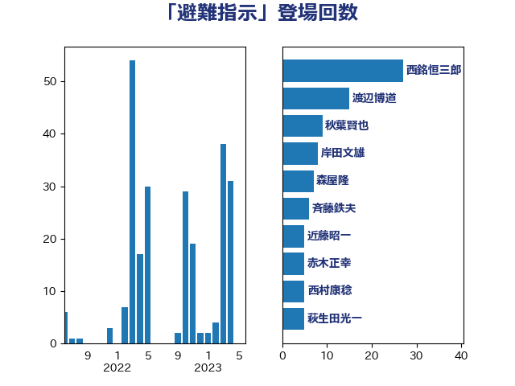

単語「避難指示」

| 西銘恒三郎 | 自由民主党 | 27 回 |
| 渡辺博道 | 自由民主党 | 15 回 |
| 秋葉賢也 | 自由民主党 | 9 回 |
| 岸田文雄 | 自由民主党 | 8 回 |
| 森屋隆 | 立憲民主党 | 7 回 |
| 斉藤鉄夫 | 公明党 | 6 回 |
| 近藤昭一 | 立憲民主党 | 5 回 |
| 赤木正幸 | 日本維新の会 | 5 回 |
| 西村康稔 | 自由民主党 | 5 回 |
| 萩生田光一 | 自由民主党 | 5 回 |
| 若松謙維 | 公明党 | 5 回 |
| 梶原大介 | 自由民主党 | 5 回 |
| 岩渕友 | 日本共産党 | 5 回 |
| 長峯誠 | 自由民主党 | 4 回 |
| 谷公一 | 自由民主党 | 4 回 |
| 菅家一郎 | 自由民主党 | 4 回 |
| 石井正弘 | 自由民主党 | 4 回 |
| 根本幸典 | 自由民主党 | 4 回 |
| 里見隆治 | 公明党 | 3 回 |
| 西村明宏 | 自由民主党 | 3 回 |
| 新妻秀規 | 公明党 | 3 回 |
| 高橋千鶴子 | 日本共産党 | 2 回 |
| 長友慎治 | 国民民主党 | 2 回 |
| 金子恵美 | 立憲民主党 | 2 回 |
| 石井苗子 | 日本維新の会 | 2 回 |
| 玄葉光一郎 | 立憲民主党 | 2 回 |
| 松村祥史 | 自由民主党 | 2 回 |
| 冨樫博之 | 自由民主党 | 2 回 |
| 佐藤啓 | 自由民主党 | 2 回 |
| おおつき紅葉 | 立憲民主党 | 2 回 |
| 鬼木誠 | 立憲民主党 | 1 回 |
| 高見康裕 | 自由民主党 | 1 回 |
| 野中厚 | 自由民主党 | 1 回 |
| 自見はなこ | 自由民主党 | 1 回 |
| 紙智子 | 日本共産党 | 1 回 |
| 竹谷とし子 | 公明党 | 1 回 |
| 竹詰仁 | 国民民主党 | 1 回 |
| 石井啓一 | 公明党 | 1 回 |
| 田村貴昭 | 日本共産党 | 1 回 |
| 浜地雅一 | 公明党 | 1 回 |
| 浜口誠 | 国民民主党 | 1 回 |
| 林芳正 | 自由民主党 | 1 回 |
| 松本剛明 | 自由民主党 | 1 回 |
| 杉久武 | 公明党 | 1 回 |
| 朝日健太郎 | 自由民主党 | 1 回 |
| 庄子賢一 | 公明党 | 1 回 |
| 岸真紀子 | 立憲民主党 | 1 回 |
| 岩谷良平 | 日本維新の会 | 1 回 |
| 山口壯 | 自由民主党 | 1 回 |
| 小沢雅仁 | 立憲民主党 | 1 回 |
| 小島敏文 | 自由民主党 | 1 回 |
| 小山展弘 | 立憲民主党 | 1 回 |
| 大野泰正 | 自由民主党 | 1 回 |
| 大口善徳 | 公明党 | 1 回 |
| 加藤勝信 | 自由民主党 | 1 回 |
| 加田裕之 | 自由民主党 | 1 回 |
| 下野六太 | 公明党 | 1 回 |